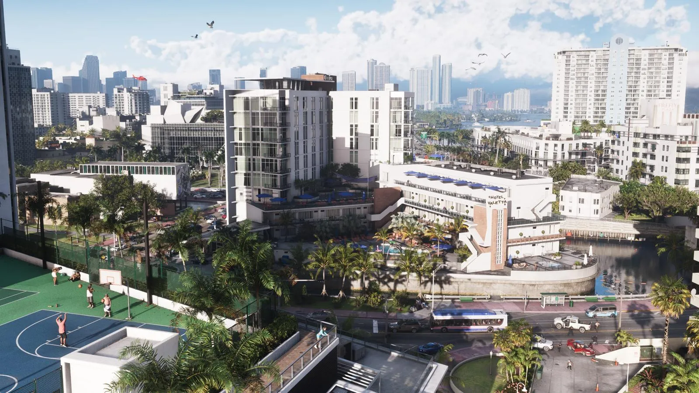

Округа Леониды в GTA 6: где что находится на карте
Опубликовано:

- Штат Леонида делится на 5 округов: Вайс-Дейл, Мариана, Келли, Леонард и Ламмокс.
- Вайс-Дейл — Вайс-Сити, Вайс-Бич, аэропорт VCIA и Хэмлет. Мариана — острова Кис и начало игры на Ки-Ленто.
- Келли — Port Gellhorn и Капри, Леонард — Амброзия и озеро Леонида, Ламмокс — нацпарк Mount Kalaga.
- Rockstar показывает 6 регионов — они не совпадают с округами один к одному.
5 округов
Рекламные материалы Rockstar делили Леониду на шесть «открыточных» регионов. В игре всё устроено как в настоящем американском штате — по округам. Их пять, и названия видны на номерах машин, вывесках и в адресах миссий.
| Округ | Где | Что внутри |
|---|---|---|
| Вайс-Дейл (Vice-Dale) | юго-восток | Вайс-Сити — самая плотная часть карты, Вайс-Бич к востоку от центра, аэропорт VCIA, Хэмлет с тюрьмой Hamlet Correctional |
| Мариана (Mariana) | юг | острова Leonida Keys: Ки-Ленто, где начинается игра, Maroon Key, Bobcat Bay, Watson Bay, Southwind; военная база Mile Zero Air Station |
| Келли (Kelly) | западное побережье | Port Gellhorn — бывший курорт с заброшенными торговыми центрами, гоночная трасса Gellhorn Raceway, роскошный Капри |
| Леонард (Leonard) | внутренняя часть штата | Амброзия с байкерами и сахарным заводом, озеро Леонида — самое большое на карте |
| Ламмокс (Lummox) | север | национальный парк Mount Kalaga: охота, рыбалка, бездорожье |
Округ Мариана и Вайс-Дейл встречаются уже в первой главе: миссии начинаются в «Mariana County › Key Lento», а тюрьма Лусии и штрафстоянка — в «Vice Dale County › Hamlet». Об округе Амброзия, который мелькал в утечках, пока пишут по-разному.
Округа и регионы
| Регион Rockstar | Округ |
|---|---|
| Вайс-Сити | Вайс-Дейл |
| Leonida Keys | Мариана |
| Grassrivers | болота; миссии главы 1 с Kingfishers проходят на северо-западе округа Мариана |
| Port Gellhorn | Келли |
| Амброзия | Леонард |
| Mount Kalaga | Ламмокс |
Места, которые уже знают все
- Ки-Ленто — острова, где Джейсон живёт в главе 1: дом, пристань Брайана, бар Rusty Anchor, дайв-шоп Island Dreams.
- Хэмлет — тюрьма Лусии, штрафстоянка и Pay ’n’ Spray из миссии Unwanted Attention.
- Pelican Valley — территория банды Kingfishers в болотах.
- Ocean Beach — район Вайс-Сити, где пара обустраивается в главе 4.
- VCIA — международный аэропорт Вайс-Сити и цель большого ограбления главы 4.
- Mile Zero Air Station — военная база с танками на южных островах.
Официальная карта
Rockstar обещала в день релиза бесплатную печатную карту Леониды на сайте игры; утром 19 ноября её там ещё не было. Как только она появится, на её основе мы сделаем интерактивную карту с коллекционками и местами миссий. Размеры и сравнение с GTA 5 — в разделе Карта и регионы.
- Ки-Ленто, где начинается игра, относится к округу Мариана — как и военная база Mile Zero.
- Пешком через всю карту журналисты Kotaku шли 3 часа 21 минуту.
Частые вопросы
Сколько округов в GTA 6?
Пять: Вайс-Дейл, Мариана, Келли, Леонард и Ламмокс.
В каком округе Вайс-Сити?
В округе Вайс-Дейл, на юго-востоке Леониды.
Где начинается GTA 6?
На острове Ки-Ленто в округе Мариана (Leonida Keys).
Источники: GTABase, «Where Is GTA 6 Set? Vice City & All Leonida Locations», 18.11.2026; PC Gamer, «The GTA 6 map: Vice City, Ambrosia, and everything in between», 19.11.2026; GTA Side, «GTA 6 Map», 16.11.2026; PowerPyx (места миссий главы 1), 19.11.2026; neonsect.com, 19.11.2026; VGTimes (Kotaku), 18.11.2026.
Каждый день — новости, фишки и секреты GTA 6 за 30 секунд. Подписывайтесь:
YouTubeInstagramTikTok